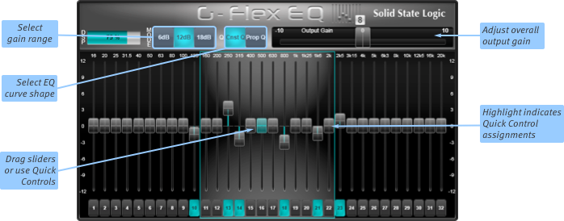
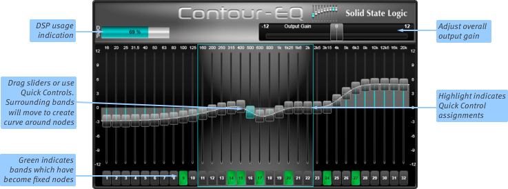
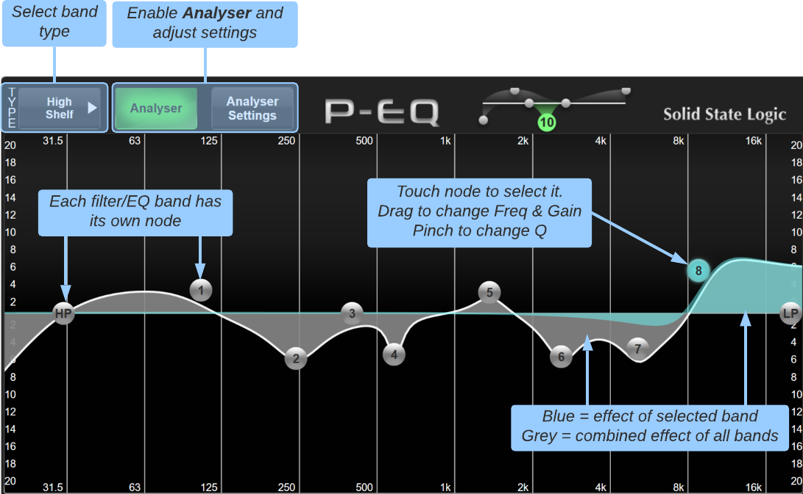

For more information about Effects in general, please see the Effects Rack Overview section.
EQ Effects
G-Flex Graphic EQ
The G-Flex EQ provides a full 32-band graphic EQ. The 32-filter version has all bands available, like a traditional analogue 32-band graphic EQ unit.
It is also available in 8-, 16- and 24-filter versions to save processing power. These modules allow 8, 16 or 24 filters to be used simultaneously from the 32 available. When a filter is in use the button beneath its slider will light cyan. Once this limit is reached (signified by the DSP graph reaching 100% and the other sliders becoming disabled), no further EQ can be applied unless one of the existing filters is removed by tapping its associated button beneath the slider to free up its DSP resource.

Use the Mode buttons to select the gain range of the band sliders between ±6 dB, 12 dB and 18 dB.
The Const (Constant) and Prop (Proportional) buttons define the way the Q shape changes with gain:
In 'Constant' mode, the Q shape remains the same regardless of the band's gain;
In 'Proportional' mode, the bell shape gets narrower the further the gain is moved from 0 dB.
Proportional equalisers are generally considered more 'musical' than Constant ones.
You can now adjust each band by dragging its slider.
The section of EQ bands which is 'lit' and has a blue surround is assigned to the Quick Controls beneath the screen if Follow Detail is enabled.
To adjust the overall output gain of the signal, drag the large slider in the top right of the module.
To reset an individual band, press the number button beneath the relevant slider.
Contour-EQ

Contour-EQ is a new intelligent kind of graphic EQ, creating a smoother EQ curve and allocating 'Nodes' for faster control:
'Nodes' are simply frequency bands whose gains have been 'locked'; when you move a band slider, the bands around it will also move in order to keep the overall EQ curve as smooth as possible, pivoting around the Nodes either side of the one which was moved.
Each time you move a band slider, that band is allocated as a Node; it will not move unless you explicitly change it.
You can create Node bands without changing their gain by simply touching the numbered box beneath the band; the box will go green to indicate that the band is now a Node.
You can 'de-allocate' a band by touching its numbered box; this will cause the band and those around it to shift to reflect the positions of the nearest Nodes.
The white line provides a precise indication of the overall effect of the configuration.
Tip: Asymmetrical EQ curves can be achieved by setting the centre frequency Node to the desired gain and creating Nodes at different distances either side of the centre frequency. The EQ will then produce a curve that is steeper on the side with the closer Node and shallower on the side with the farther Node.In order to manage the DSP resources involved in Contour-EQ, a DSP meter is shown in the top left – if this meter moves close to 100% and one or more Node buttons light yellow (meaning the requested gain cannot be achieved), the EQ curve is too complex and you will need to simplify the EQ shape until the DSP meter reduces.
The section of EQ bands which is 'lit' and has a blue surround is assigned to the Quick Controls beneath the screen if Follow Detail is enabled.
To adjust the overall output gain of the signal, drag the large slider in the top right of the module.
Parametric EQ

The parametric EQ functions very much like the Channel EQ Detail View, with the exception that this module can have either four or eight parametric EQ bands, plus 2 filters.
Bands for all EQ types can be assigned to the Quick Controls beneath the screen if Follow Detail is enabled. These can also be flipped to the faders using the Fader Tile's Flip button.
Engage the Analyser button to enable a spectrum analyser overlay to the EQ graph. Press the Analyser Settings button to adjust the offset trim to the analyser and whether the analyser shows the pre- or post-EQ signal.
Note: The analyser is only available on mono and stereo EQ FX modules.
See the Path EQ Processing section for more information.Useful Links
Detail ViewEffects Rack Overview
Delay Effects
Dynamics Effects
Modulation Effects
Reverb Effects
Other Effects Modules
Audio Tools
Automix
Index and Glossary